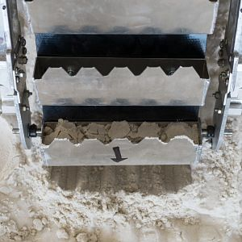

NASA Robotics Mining Competition
The NASA Robotics Mining Competition (NASA RMC) is a national collegete competition for which teams design a robot capable of autonomously excavating regolith in a similuted Martian enviroment. The competition is held every year in May at the NASA Kennedy Space Center.

